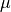

Parameter estimation for the Cauchy (Lorentzian) distribution¶
Introduction¶
Cauchy (Lorentzian) distribution is a symmetric distribution described by location parameter  and a scale parameter  as
as
Because its tails decrease as slowly as for large , the mean, variance, standard deviation, and higher moments do not exist. Therefore we cannot estimate location and scale parameter from the mean, standard deviation. Instead, we can estimate it from median value and interquartile range for { } using a Bayesian approach.
} using a Bayesian approach.
Suppose we want to determine the location of a lighthouse signal along the coastline. Let coastline located at y = 0, and the lighthouse is at distance away from the coastline. Define the angle between the line of light and coastline as  , then the position is expressed as . From , and angle is distributed uniformly, we can find data likelihood using .
, then the position is expressed as . From , and angle is distributed uniformly, we can find data likelihood using .
The datalikelihood for a set of data {} with Cauchy distribution is
In this notebook, we will explore how the changes of and affect the estimated probability density function (pdf).
Import Functions¶
The core function used for the Cauchy function is cauchy in scipy.stats.
import numpy as np
from matplotlib import pyplot as plt
from scipy.stats import cauchy
from astroML.plotting.mcmc import convert_to_stdev
from astroML.stats import median_sigmaG
from astroML.resample import bootstrap
Log-likelihood for Cauchy Distribution¶
Given a data set of measured positions {}, we need to estimate and . Analogously to the Gaussian case discussed in the prevoius chapter, we shall adopt a uniform prior distribution for the location parameter , and a uniform prior distribution for ln, for  and .
and .
The logarithm of the posterior pdf is
1. Define function¶
We define the log-likelihood function as
In this example, we will use N = 10 values of , = 0, and = 2.
def cauchy_logL(xi, gamma, mu):
"""Equation 5.74: cauchy likelihood"""
xi = np.asarray(xi)
n = xi.size
shape = np.broadcast(gamma, mu).shape
xi = xi.reshape(xi.shape + tuple([1 for s in shape]))
return ((n - 1) * np.log(gamma)
- np.sum(np.log(gamma ** 2 + (xi - mu) ** 2), 0))
# Define the grid and compute logL
gamma = np.linspace(0.1, 5, 70)
mu = np.linspace(-5, 5, 70)
np.random.seed(44)
mu0 = 0
gamma0 = 2
xi = cauchy(mu0, gamma0).rvs(10)
logL = cauchy_logL(xi, gamma[:, np.newaxis], mu)
logL -= logL.max()
2. Find mu and gamma at max data likelihood¶
We can find and that maximize L by setting the derivative of L to 0, as . Here in this example, the result is , and .
Median and interquartile range imply and . The interquartile range for the Cauchy distribution is equal to and thus $$
When using this shortcut, the bootstrap method can be used to estimate parameter uncertainties as shown in the next section.
i, j = np.where(logL >= np.max(logL))
print("mu from likelihood:", mu[j])
print("gamma from likelihood:", gamma[i])
print()
med, sigG = median_sigmaG(xi)
print("mu from median", med)
print("gamma from quartiles:", sigG / 1.483)
print()
mu from likelihood: [-0.36231884]
gamma from likelihood: [0.81014493]
mu from median -0.2625695623133895
gamma from quartiles: 1.10950042396172
3. Plot the results¶
Here we show the result of the logarithm of posterior probability distribution for and for given above.
This example uses N = 10, = 0 and = 2. The maximum of L is renormalized to 0, and color coded as shown in the legend. The contours enclose the regions that contain 0.683, 0.955 and 0.997 of the cumulative (integrated) posterior probability.
fig = plt.figure(figsize=(5, 3.75))
plt.imshow(logL, origin='lower', cmap=plt.cm.binary,
extent=(mu[0], mu[-1], gamma[0], gamma[-1]),
aspect='auto')
plt.colorbar().set_label(r'$\log(L)$')
plt.clim(-5, 0)
plt.contour(mu, gamma, convert_to_stdev(logL),
levels=(0.683, 0.955, 0.997),
colors='k')
plt.text(0.5, 0.93,
r'$L(\mu,\gamma)\ \mathrm{for}\ \bar{x}=0,\ \gamma=2,\ n=10$',
bbox=dict(ec='k', fc='w', alpha=0.9),
ha='center', va='center', transform=plt.gca().transAxes)
plt.xlabel(r'$\mu$')
plt.ylabel(r'$\gamma$')
plt.show()
Posterior for Cauchy Distribution¶
In the prevoius secsion, we use the interquartile range shortcut expressed by Here we will use a bootstrap method to estimate parameter uncertainties.
1. define function¶
def estimate_mu_gamma(x, axis=None):
"""Equation 3.54: Cauchy point estimates"""
q25, q50, q75 = np.percentile(x, [25, 50, 75], axis=axis)
return q50, 0.5 * (q75 - q25)
2. Generate sample and use Bootstrap estimation¶
Draw a random sample from the cauchy distribution, and compute marginalized posteriors of mu and gamma. Here we have a Cauchy distributed sample with N = 10,  ,
,  .
.
np.random.seed(44)
n = 10
mu_0 = 0
gamma_0 = 2
xi = cauchy(mu_0, gamma_0).rvs(n)
gamma = np.linspace(0.01, 5, 70)
dgamma = gamma[1] - gamma[0]
mu = np.linspace(-3, 3, 70)
dmu = mu[1] - mu[0]
likelihood = np.exp(cauchy_logL(xi, gamma[:, np.newaxis], mu))
pmu = likelihood.sum(0)
pmu /= pmu.sum() * dmu
pgamma = likelihood.sum(1)
pgamma /= pgamma.sum() * dgamma
# bootstrap estimate
mu_bins = np.linspace(-3, 3, 21)
gamma_bins = np.linspace(0, 5, 17)
mu_bootstrap, gamma_bootstrap = bootstrap(xi, 20000, estimate_mu_gamma,
kwargs=dict(axis=1), random_state=0)
3. Plot results¶
We will draw a bootstrap estimation (blue dotted lines) of this Cauchy distributed sample along with the posterior pdf (black solid lines). The left two plots show how the result changes with the change of posterior , and the right two plots show how the result changes with the posterior .
The bottom two plots show the cumulative probability distribution.
fig = plt.figure(figsize=(7, 7))
fig.subplots_adjust(wspace=0.35, right=0.95,
hspace=0.2, top=0.95)
# first axes: mu posterior
ax1 = fig.add_subplot(221)
ax1.plot(mu, pmu, '-k')
ax1.hist(mu_bootstrap, mu_bins, density=True,
histtype='step', color='b', linestyle='dashed')
ax1.set_xlabel(r'$\mu$')
ax1.set_ylabel(r'$p(\mu|x,I)$')
# second axes: mu cumulative posterior
ax2 = fig.add_subplot(223, sharex=ax1)
ax2.plot(mu, pmu.cumsum() * dmu, '-k')
ax2.hist(mu_bootstrap, mu_bins, density=True, cumulative=True,
histtype='step', color='b', linestyle='dashed')
ax2.set_xlabel(r'$\mu$')
ax2.set_ylabel(r'$P(<\mu|x,I)$')
ax2.set_xlim(-3, 3)
# third axes: gamma posterior
ax3 = fig.add_subplot(222, sharey=ax1)
ax3.plot(gamma, pgamma, '-k')
ax3.hist(gamma_bootstrap, gamma_bins, density=True,
histtype='step', color='b', linestyle='dashed')
ax3.set_xlabel(r'$\gamma$')
ax3.set_ylabel(r'$p(\gamma|x,I)$')
ax3.set_ylim(-0.05, 1.1)
# fourth axes: gamma cumulative posterior
ax4 = fig.add_subplot(224, sharex=ax3, sharey=ax2)
ax4.plot(gamma, pgamma.cumsum() * dgamma, '-k')
ax4.hist(gamma_bootstrap, gamma_bins, density=True, cumulative=True,
histtype='step', color='b', linestyle='dashed')
ax4.set_xlabel(r'$\gamma$')
ax4.set_ylabel(r'$P(<\gamma|x,I)$')
ax4.set_ylim(-0.05, 1.1)
ax4.set_xlim(0, 4)
plt.show()